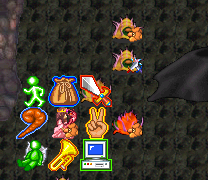

다크세이버 게시판
작성자: dkrldhs3377(dkrldhs3377)
작성일: 2014-01-22 03:10:00
aa
댓글 6
하늘하늘(dkssud6580) 2014-01-22 12:52:00
bingbang108(bingbang108) 2014-01-22 12:59:00
조현우(chohw0711) 2014-01-22 14:38:00
dkrldhs3377(dkrldhs3377) 2014-01-22 17:09:00
러브레터(bluekariss) 2014-01-23 10:12:00
dkrldhs3377(dkrldhs3377) 2014-01-23 10:32:00